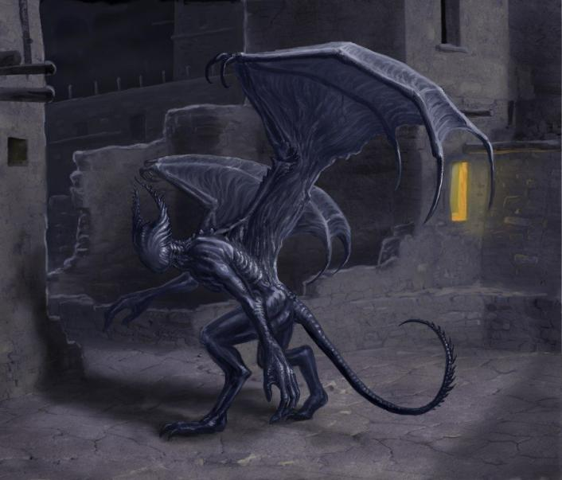

Легендарная гора Нгранек на острове Ориаб имеет дурную славу, отчего лишь немногие набираются смелости подняться по её склонам. Представляя собой потухший вулкан, Нгранек служит домом для крылатых и безликих чудовищ: здесь обитают, ночные призраки. Они селятся на вершинах невысоких гор и хребтов, в пещерах над бездонными пропастями.
И пещеры безмолвных ночных призраков воистину глубоки. Тоннели ведут к самым нижним областям Страны Снов, к Великой Бездне. Ночные призраки хватают неосторожных жертв мощными когтями и несут их туда на пожирание бхолам.
Их невозможно услышать; ночные призраки совершенно невозмутимы и даже лишены лиц. Их описывают как отвратительных тварей черного цвета с лоснящейся кожей, напоминающей китовую. Безликую голову венчают изогнутые внутрь рога. Перепончатые крылья бесшумны в полете, уродливые лапы цепки и проворны, а хвост — словно свистящий хлыст.
Шантаки, слуги Древних, опасаются могущественных ночных призраков. Поговаривают, что черные безликие твари служат седому богу Ноденсу, великому охотнику и Повелителю Бездны. Ночные призраки также связаны давней дружбой с гулями из Страны Снов — понимают их речь, выполняют просьбы и поручения и даже сражаются на их стороне.
Играют важную роль в повести Г. Ф. Лавкрафта «Сновидческие искания неведомого Кадата» (The Dream-Quest of the Unknown Kadath, 1927). Также появляются в стихотворении «Ночные призраки» (Night-Gaunts, 1930) из цикла «Грибы с Юггота» (Fungi from Yuggoth, 1930).
